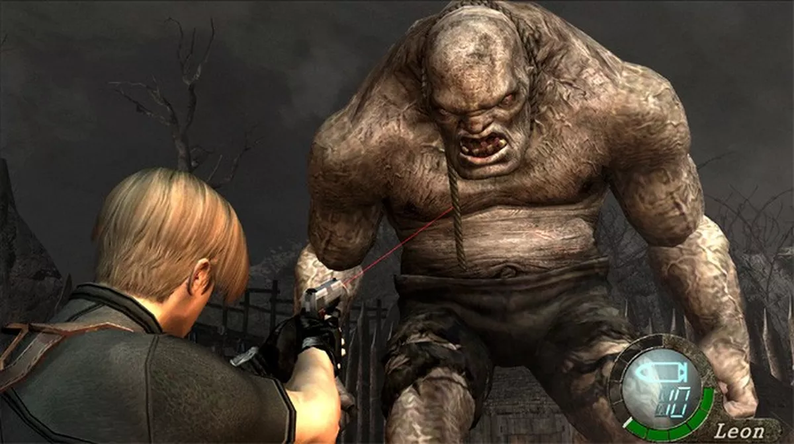

TOP 10 JOGOS RETRÔ
Tetris
Resident Evil 4
Street Fighter II
Pac-Man
Super Mario World
Team Fortress 2
Super Mario 64
Tibia
Final Fantasy VII
Ragnarok Online
Resident Evil IV

Resident Evil 4, conhecido no Japão como Biohazard 4 (バイオハザード4
Baiohazādo Fō?), é um jogo eletrônico de survival horror e tiro em
terceira pessoa desenvolvido e publicado pela Capcom, lançado
originalmente para o Nintendo GameCube em 2005. É o sexto jogo
principal da franquia Resident Evil.
A história de Resident Evil 4 segue o agente especial do governo dos
Estados Unidos Leon S. Kennedy, que é enviado em uma missão para
resgatar Ashley Graham, filha do presidente americano, que foi raptada
por uma seita macabra. Ele viaja para uma área rural da Espanha, onde
luta contra hordas de moradores violentos e monstros mutantes, e se
reúne com a misteriosa espiã Ada Wong.
Planejado desde dezembro de 1999, Resident Evil 4 foi submetido a um
longo processo de desenvolvimento, durante o qual quatro versões
propostas para o jogo foram descartadas. Inicialmente desenvolvido
para o Nintendo GameCube, a primeira produção foi dirigida por Hideki
Kamiya depois que o produtor Shinji Mikami pediu-lhe para criar um
novo título para a série Resident Evil. No entanto, foi decidido
iniciar o desenvolvimento novamente. O jogo foi destinado a ser um
exclusivo do GameCube como parte do Capcom Five, mas uma versão para
PlayStation 2 foi anunciada antes do jogo ser lançado no GameCube.
Posteriormente, Resident Evil 4 também foi lançado para Microsoft
Windows, Wii, PlayStation 3, Xbox 360, PlayStation 4, Xbox One e
Nintendo Switch, bem como em recebeu versões reduzidas para iOS, Zeebo
e Android e teve uma versão em realidade virtual para o Oculus Quest
2.
Resident Evil 4 recebeu aclamação da crítica. Ele ganhou muitos
prêmios de Jogo do Ano em 2005 e foi visto como um sucesso
multiplataforma que influenciou a evolução dos gêneros survival horror
e de tiro em terceira pessoa. O jogo também foi pioneiro e popularizou
a perspectiva de visão "sobre o ombro" em terceira pessoa. Desde
então, tem sido amplamente considerado um dos melhores jogos de todos
os tempos. Uma recriação está prevista para ser lançada em 24 de março
de 2023 para Microsoft Windows, PlayStation 5 e Xbox Series X/S.